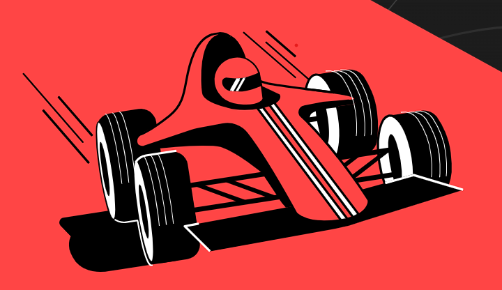
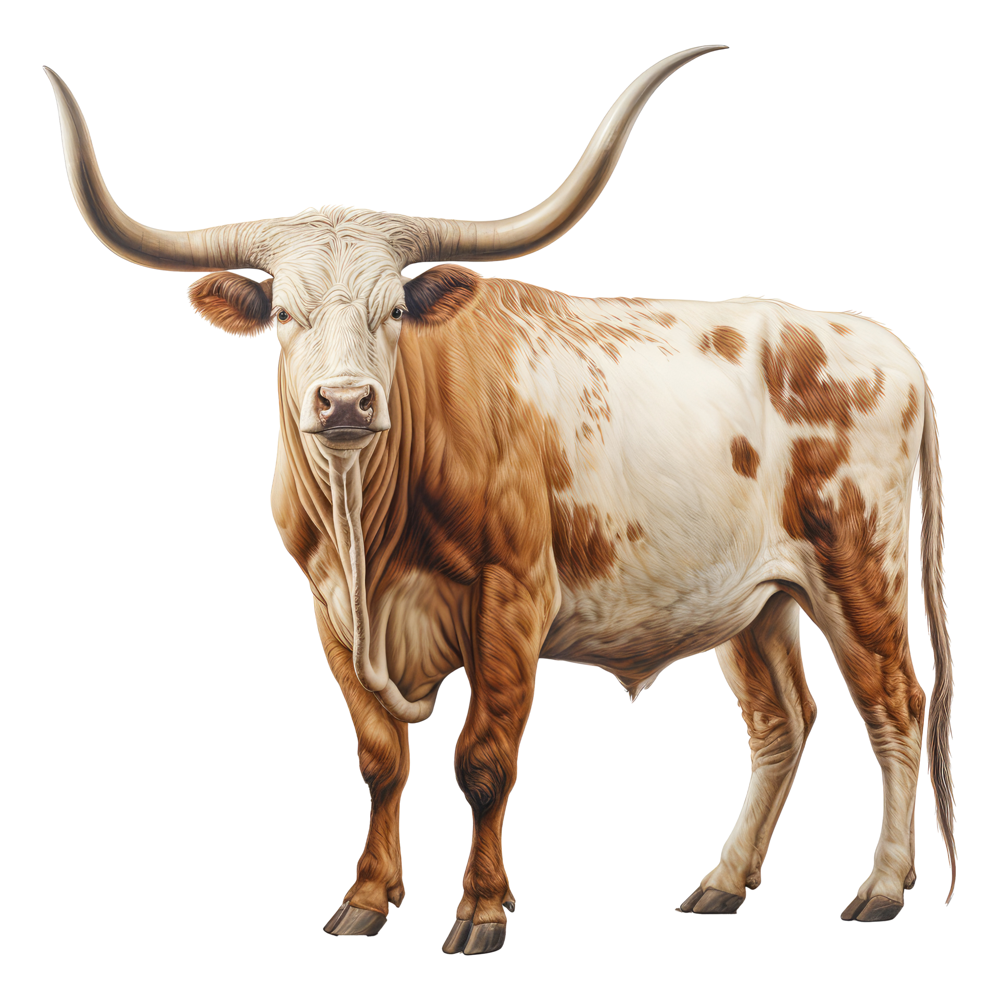

Hand Gesture Recognition
Latest hand sign will be displayed here

Make hand signs in front of the camera and the AI will try to recognize them to the best of its ability. Please ensure the camera is enabled.